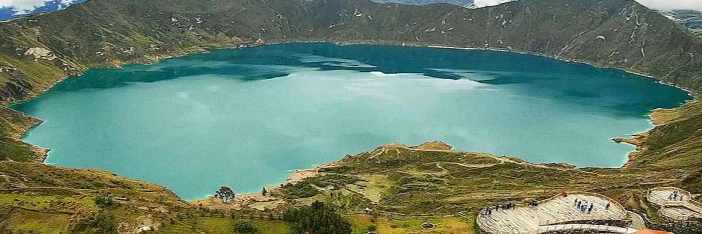

QUILOTOA (ECUADOR)
La Laguna del Quilotoa y la belleza dentro de un cráter
El Quilotoa es el volcán más occidental de los Andes ecuatorianos, dentro de su cráter se ha formado una caldera con un diámetro de casi 9 km. Este es el producto del colapso del volcán, ocurrido hace unos 800 años. Según estudios, el flujo volcánico logró alcanzar el Océano Pacífico.
En la caldera de 250 m de profundidad, se ha formado una laguna. Los minerales le han conferido a la superficie un tono verdoso y azulado cuando recibe el impacto de la luz solar. Dentro, existen manantiales que desde la orilla, se pueden percibir como burbujeantes estelas que ascienden a la superficie.
La popularidad del Quilotoa se debe a la belleza de sus parajes y el espectáculo de las aguas calmas. En la comunidad de Quilotoa, también conocida como la Ruta de la “Cumbre” y a la que se accede en bus desde el pueblo de Zumbahua, los visitantes pueden realizar ecoturismo y turismo de aventura con una alta dosis de adrenalina o simplemente contemplar los paisajes cercanos.
Incluso este paraje es cercano a lo que muchos investigadores asumen como la última morada del Inca Atahualpa, por lo que esta fue la última ruta sagrada de los incas. Visitar Quilotoa es una experiencia sobrecogedora aproximadamente a 4 mil metros sobre el nivel del mar.